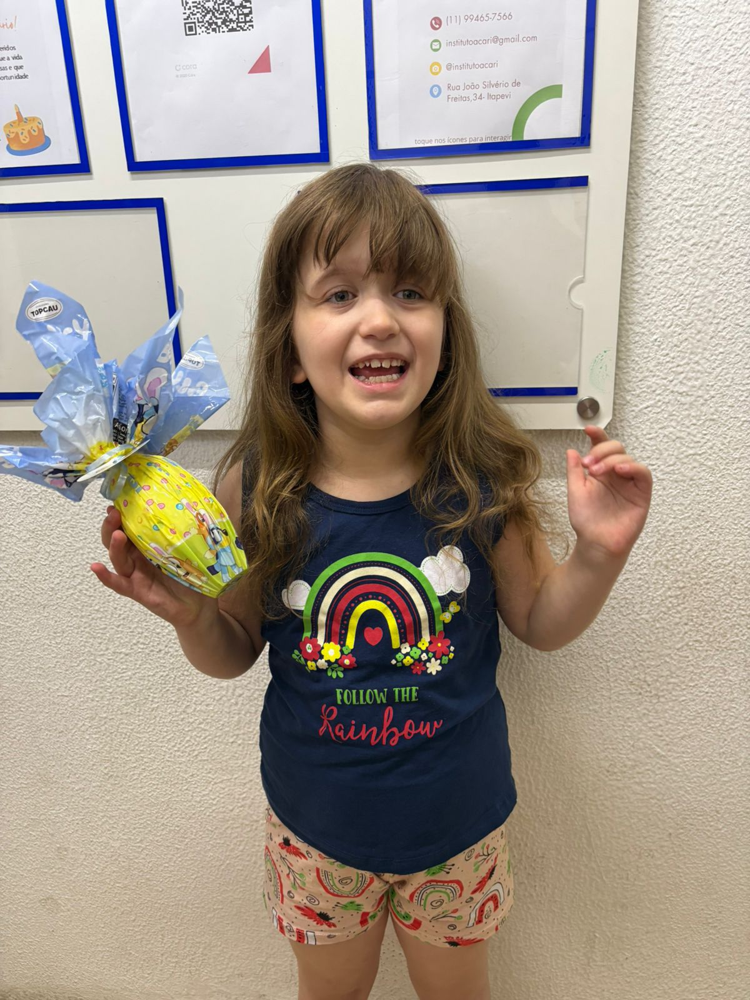
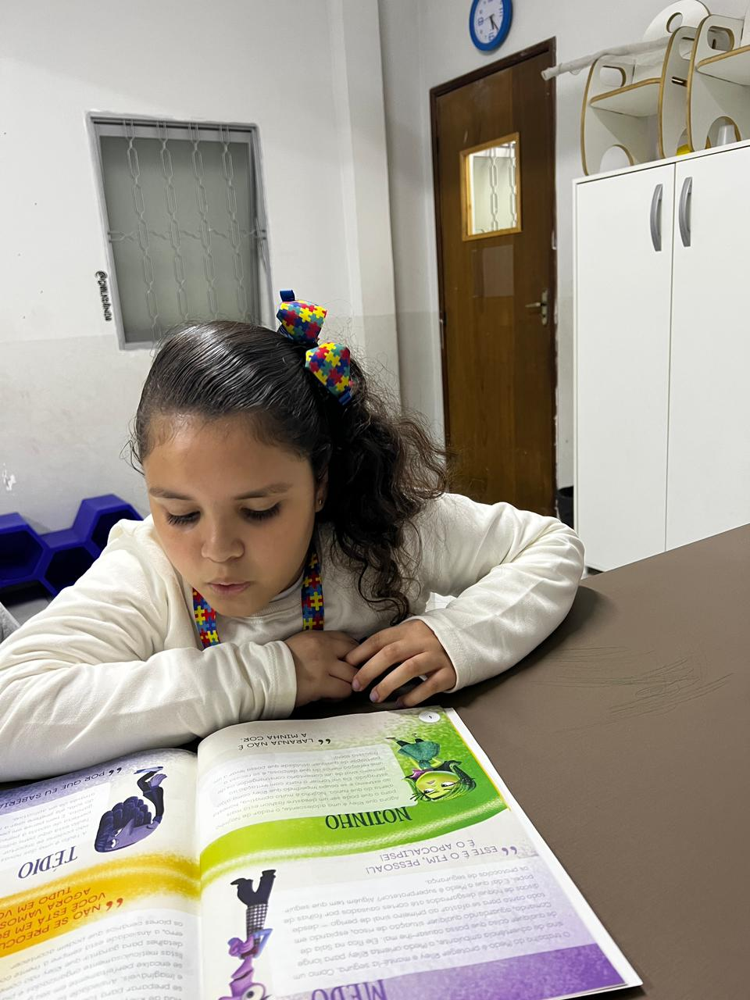
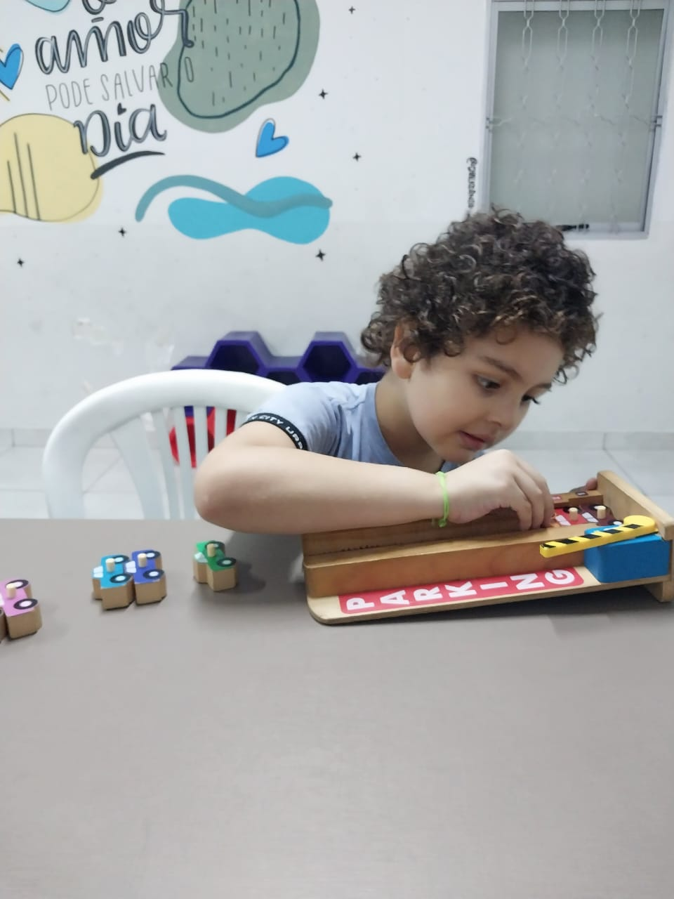
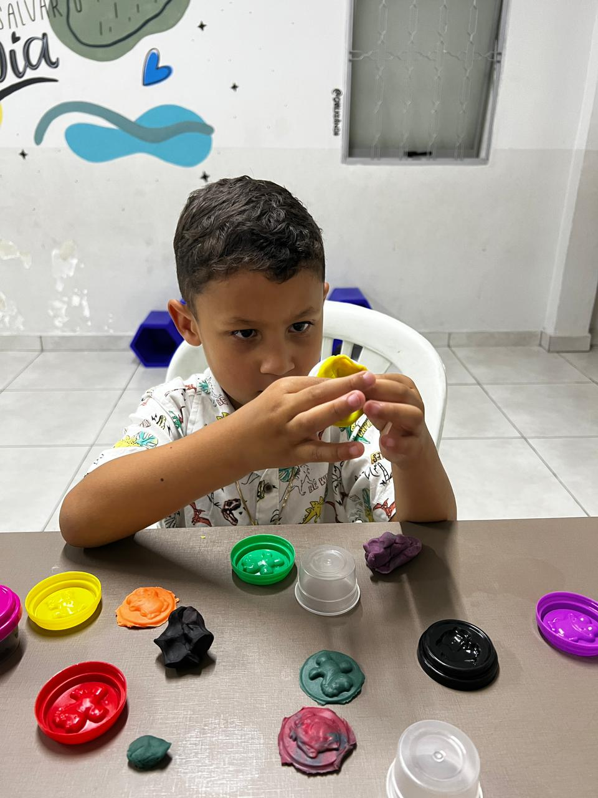
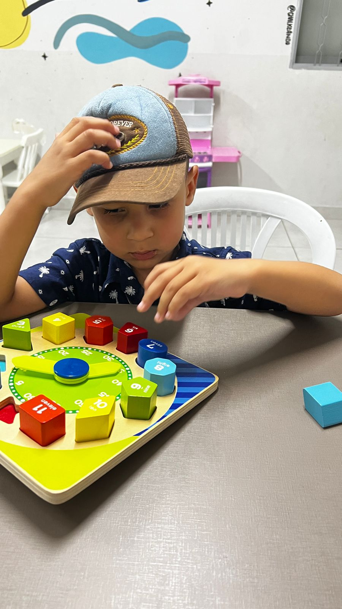
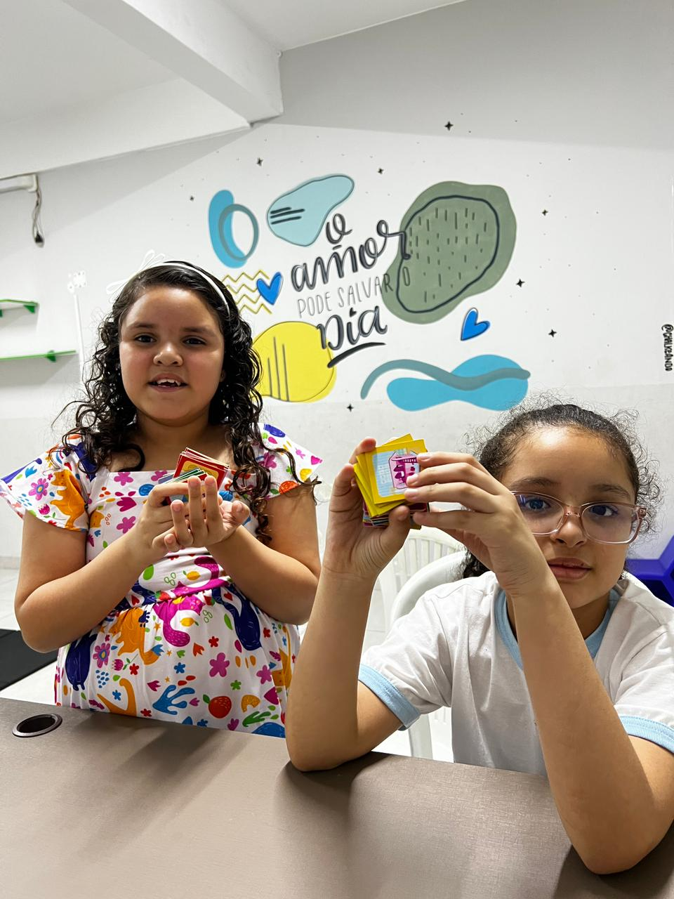

💙 Acolhimento e Cuidado humanizado.
❤️ Amor, Respeito e Inclusão para todos.
🧩 Construindo pontes entre potencial e possibilidades.
Utilize o QR Code ao lado para fazer sua doação via PIX de forma rápida e segura. Todo valor é revertido para a manutenção dos nossos projetos sociais.






Onde estamos
Endereço:
Jardim Nova Itapevi
Itapevi - SP
Atendimento:
Segunda a Sexta: 09h às 18h